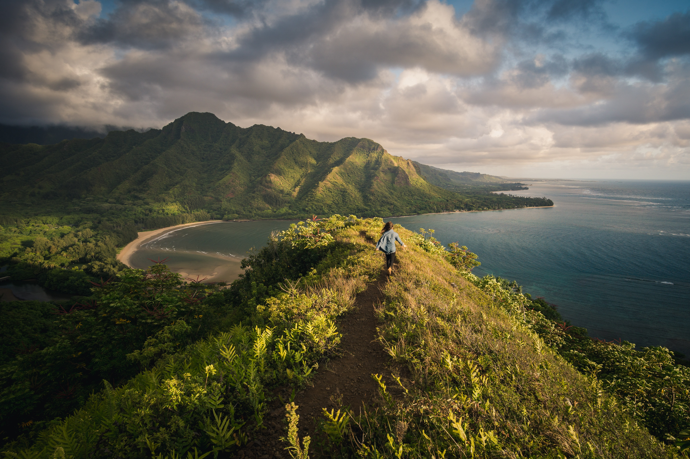

Waimanalo Beach: The Complete Guide

Imagine a miles-long beach with sand as soft as powder and stunning turquoise water as far as the eye can see. If you’re planning a trip to Oahu, you won’t have to! Waimanalo Beach is a true hidden gem on this popular island, though many visitors never make it there.Waimanalo has two main entrances, one near the south end across from Nakini Street and another on the north end between Aloiloi Street and Tinker Road. The former is considered the official Waimanalo Beach Park while the latter is technically called Waimanalo Bay State Recreation Area. Both spots come complete with showers, restrooms, a lifeguard tower, trash cans, picnic tables, and campsites available.
Waikiki Beach
Located on the south shore of Honolulu, the world-famous neighborhood of Waikiki was once a playground for Hawaiian royalty. Known in Hawaiian as "spouting waters," Waikiki was introduced to the world when its first hotel, the Moana Surfrider, was built on its shores in 1901. Today, Waikiki is Oahu’s main hotel and resort area and a vibrant gathering place for visitors from around the world. Along the main strip of Kalakaua Avenue you'll find world-class shopping, dining, entertainment, activities and resorts.
Hanauma Bay

In 2002 a marine education center was opened for visitors and part of the conservation plan requires first-time visitors to watch a 9 minute video before entering the park so they can learn about the marine life, preservation and safety rules for the park. All visitors are required by law to refrain from mistreating the marine animals and from touching or walking on the coral. In the early 2000’s the natural spa called “Toilet Bowl” because of the rise and fall of water with the waves, was closed to visitors due safety concerns.
The Pillbox Trail
The Ka’iwa Ridge Trail, otherwise known as the Pillbox Trail, is located on the ridge overlooking Lanikai and Enchanted Lakes, both suburbs of Kailua on the windward side of Oahu. Lanikai was once an agricultural area with fields of watermelon, but later the area became secluded weekend vacation homesteads for the wealthy to escape from Honolulu. The beauty of Lanikai beach and Lanikai Bay with it’s close proximity to the offshore islands (the Mokes) has turned Lanikai into a place of great renown over time. This trail has become one of the most popular trails on the island because of the stunning views of Kailua Bay, Ko’olau Mountains, ease of accessibility, and length of hike. A recent survey showed 1,370 visitors in one day!
Laniakea Beach (Turtle Beach)
More commonly known as Turtle Beach, this Oahu North Shore cove often attracts honu, aka Chelonia mydas, the largest of the hard-shelled sea turtles. These big, friendly giants can reach 400 pounds as adults and are herbivorous, feeding primarily on algae and seagrasses, abundant year-round in the warm, shallow waters. Summer's gentle surf—swells averaging just two feet—increase your odds of quality turtle time. Cross the road carefully and keep at least six feet away from the endangered turtles as they sunbathe onshore (mind any "no-go" zones maintained by volunteers). Avoid swimming here: The currents and beach rocks make it challenging.